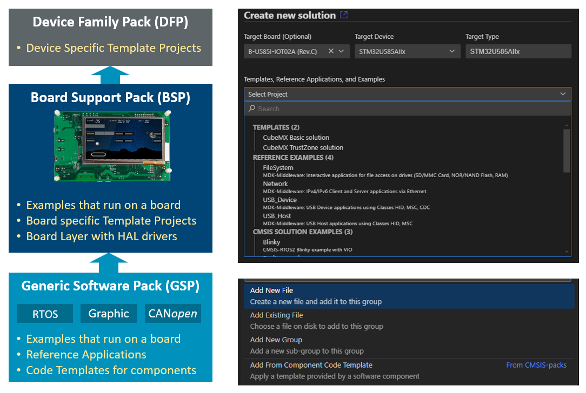

Pack Creation
This chapter describes how to create software packs and explains the tools packchk (software pack verification) and svdconv (SVD file converter). A pack provides a Pack Description file in XML format (*.pdsc) and collects information that is required by software developers and tools to work effectively with devices, boards, and middleware.
Introduction
The picture below shows the structure of the different packs and how boards, devices, and examples are exposed to an user in the Arm CMSIS Solution extension for VS Code. Packs are stacked:
- The Device Family Pack (DFP) is the foundation.
- The Board Support Pack (BSP) is based on DFP and are an extension.
- The Generic Software Packs (GSP) should use boards defined in a BSP to publish examples or Reference Applications that run on several boards.

Device Family Pack (DFP) Content
The DFP provides foundation support for a device or device family and is used by:
- Compiler (Arm Compiler, GCC, IAR, and LLVM): startup code, project templates for bare-metal development, and memory information for linker scripts.
- Debuggers: SVD description files for peripheral awareness and debug description for configuration options.
- Programmers: download algorithms and debug description for download options.
- IDE and web portals: parameter information and links to documentation, repository, and support.
- Other technologies such as RUST or Zephyr as the DFP content can be exported.
- HAL drivers and CMSIS-Drivers that offer interfaces to device peripherals.
Therefore, a DFP collects the following information:
| Must have | Strongly recommended | Optional |
|---|---|---|
| Device description | Overview.md file |
Project templates |
| SVD description files | Links to documentation | Debug description |
| Device Header file | Device features | HAL drivers |
| Startup files (see note) | Pack Requirements | CMSIS-Drivers |
| Download algorithms |
Note
Startup files are not required if templates for a configuration generator (such as CubeMX) exports the startup code.
Hands-on Tutorial:
- DFP-Pack-HandsOn explains the structure and creation of a Device Family Pack (DFP).
Pack Example:
- STM32L4xx_DFP available on keil.arm.com/packs/stm32l4xx_dfp-keil.
Board Support Pack (BSP) Content
A BSP extends the DFP with information that relates to boards:
- The Blinky example verifies hardware and tool setup and provides the bootstrap for IDE workflows.
- With CMSIS-Driver VIO, simple I/Os such as LEDs and push buttons are controlled, and test automation is supported.
- Project templates configured for board peripherals.
- A layer can provide a pre-configured driver set for reference applications that interface to middleware.
- Board memory with download algorithms extend the information for programmers and linker scripts.
Tip
The Blinky example of the BSP-Pack-HandsOn is generic. All it requires to adapt the ./Driver/vio*.c to the actual hardware of the board.
| Must have | Strongly recommended | Optional |
|---|---|---|
| Board description | Overview.md file |
Additional examples |
| Blinky example | Layers for Reference Applications | |
| CMSIS-Driver VIO for LED and button | HAL drivers for board peripherals | |
| Board features | Project templates (board specific) | |
| Download algorithms for on-board memory | ||
| Pack Requirements |
Note
The content of a DFP and BSP may be provided in a single pack.
Hands-on Tutorial:
- BSP-Pack-HandsOn explains the structure and creation of a Board Support Pack (BSP).
Pack Example:
- NUCLEO-F746ZG_BSP available on keil.arm.com/packs/nucleo-f746zg_bsp-keil.
Generic Software Pack (GSP) Content
A GSP may provide additional middleware software such as RTOS, communication stacks, or crypto libraries.
Hands-on Tutorial:
- GSP-Pack-HandsOn explains the steps to create a software pack.
Pack Example:
- MDK-Middleware available on www.keil.arm.com/packs/mdk-middleware-keil.
Hints for Pack Creation
Several tools and scripts help to automate the pack creation and are used in these hands-on tutorials.
- Use C startup files that allows the use of a DFP with any toolchain.
- For elements, use a brief description text of less than 128 characters to explain the purpose. When possible, link to documentation with detailed information.
- Example: A component
Device:HAL:ENETshould not have descriptionENET HAL Driver, useEthernet HAL driverinstead.
- Example: A component
- Consider adding project templates to help get started with more complex projects. This is useful when devices are configured using generators or provide multiple linker scripts (e.g., RAM/ROM execution).
- To distribute toolchain agnostic examples as part of packs:
- Consider to use
select-compilerto make projects toolchain independent. - To avoid that examples need updates with every pack release, specify the minimum pack version required.
- Use CI workflows to validate that projects compile correctly.
- Consider to use
- Add an overview.md file that describes the software pack's overall usage. These files are displayed on www.keil.arm.com/packs and indexed by Web search engines.
Pack Creation Tools
The following tools are part of the CMSIS-Toolbox. These tools can be used to develop packs on a local computer and to automate the creation of packs.
| Tool | Description |
|---|---|
| packchk | Pack Validation: installs and manages software packs in the local development environment. |
| svdconv | SVD Check / Convert: validate and/or convert System View Description (SVD) files. |
| vidx2pidx | SVD Check / Convert: check Package index file (PIDX) for indexing in public pack services. |
Usage
The following section is based on the repositories DFP-Pack-HandsOn and BSP-Pack-HandsOn. Checkout these packs for local development of pack content.
Tip
Install the VS Code extension CMSIS Solution and related tools. The Keil Studio Pack is a collection of such related extensions.
Step 1: Create an empty workspace and ensure that development tools are available. When using the Arm Tools Environment Manager this can be configured using the following vand related tools are installed.
{
"registries": [
{
"name": "arm",
"kind": "artifact",
"location": "https://artifacts.tools.arm.com/vcpkg-registry"
}
],
"requires": {
"arm:compilers/arm/armclang": "6.23.0",
"arm:compilers/arm/arm-none-eabi-gcc": "14.2.1",
"arm:compilers/arm/llvm-embedded": "19.1.5",
"arm:tools/kitware/cmake": "3.31.5",
"arm:tools/ninja-build/ninja": "1.12.0",
"arm:tools/open-cmsis-pack/cmsis-toolbox": "2.7.0"
}
}
Tip
Verify the setup with the commands cbuild list environment and cbuild list toolchains.
Step 2: Register packs for development using these commands:
cpackget add <workdir>/DFP-Pack-Handson/ACME.ACMECM4_DFP.pdsc
cpackget add <workdir>/BSP-Pack-Handson/ACME.ACME_BSP.pdsc
Tip
The CMSIS-Toolbox now uses this local repositories. Verify the installation with with the commands cpackget list, csolution list devices, and csolution list boards.
Note
CMSIS-Toolbox 2.7.0 adds an empty <timestamp></timestamp> line to the file $CMSIS_PACK_ROOT/local/local_repository.pidx which prevents the VS Code extension from using the local pack content. As workaround remove this line.
Content of $CMSIS_PACK_ROOT/local/local_repository.pidx:
<?xml version="1.0" encoding="UTF-8"?>
<index schemaVersion="1.1.0">
<vendor>local repository</vendor>
<url>file://localhost/C:/Users/reikei01/AppData/Local/Arm/Packs</url>
<pindex>
<pdsc vendor="ACME" url="file://localhost/c:/w/DFP-Pack-Handson/" name="ACMECM4_DFP" version="1.1.1"></pdsc>
<pdsc vendor="ACME" url="file://localhost/C:/w/BSP-Pack-HandsOn/" name="ACME_BSP" version="1.0.0"></pdsc>
</pindex>
</index>
Step 3: The various tools have now access to the local packs and you may change the PDSC files. Rename the packs to reflect your products and develop the content starting with the MUST HAVE items listed above.
Tip
Use the VS Code extension Red Hat XML for syntax help on the XML format.
Step 4: Verify the packs using the following commands:
packchk <workdir>/DFP-Pack-Handson/ACME.ACMECM4_DFP.pdsc -i $CMSIS_PACK_ROOT/ARM/CMSIS/6.1.0/ARM.CMSIS.pdsc
packchk <workdir>/BSP-Pack-Handson/ACME.ACME_BSP.pdsc -i <workdir>/DFP-Pack-Handson/ACME.ACMECM4_DFP -i $CMSIS_PACK_ROOT/ARM/CMSIS/6.1.0/ARM.CMSIS.pdsc
Step 5: Verify the Blinky example with a build test in an IDE and execution test on the board.
Step 6: Commit the packs to the repository, verify the GitHub action workflows, download the artifacts. Make an end-to-end test of the packs on a different computer.
Step 7: Publish the packs.
Pack Generation
Packs may be generated using scripts. Several scripts are available on github.com/open-cmsis-pack:
- gen-pack is a library for scripts creating software packs.
- gen-pack-action is a GitHub workflow action generating documentation and software packs.
Tip
- Arm uses GitHub actions to create packs. Review this process under the
workflowdirectory on the projects available on github.com/arm-software or github.com/open-cmsis-pack. - A good simple pack project is the CMSIS-Driver pack. Once this pack is published it is available for software developers using pack managers or web portals.
Versioning
The CMSIS-Pack system uses version numbers to track and differentiate various releases of packs, components, and configuration files. It supports these versioning schemas:
-
Semantic Versioning (SemVer) is the recommended format with
MAJOR.MINOR.PATCH. for example:1.4.2. SemVerMAJORindicates big updates that break backward compatibility.MINORindicates new features, but still backward-compatible.PATCHindicates bug fixes or minor tweaks.PATCHcan be omitted and defaults to0in this case.
-
Calendar Versioning (CalVer) is accepted when higher values indicated newer releases. The format should be therefore
YY.MM.DD,YY.MM, orYY.MM.PATCH. For example:22.04indicates April 2022 release.22.04.1indicates April 2022 release, patch version 1.25.02.07indicates release date 7. Feb. 2025.
Both versioning schemas support -pre-release labels that may be used during development and testing. For example:
1.0.0-alphafor early testing.22.04-rc.1for a release candidate that is close to final.
Product Lifecycle Management (PLM) and versioning are closely connected. Versioning ensures that each stage of PLM is properly controlled and documented. The CMSIS-Toolbox accepts therefore version numbers and ranges for packs and components and outputs version details in build information files.
Semantic Versioning (SemVer) is recommended as it supports the PLM features of the CMSIS-Toolbox. It enables PLM of configuration files and simplifies the software pack updates. For example: - pack: ARM::CMSIS@^6.1.0 accepts any pack version equal or higher but with the same MAJOR version.
Project Examples
Project examples help to get started with new devices, boards, and middleware software components. The CMSIS-Pack format supports, therefore, different types of project examples:
- Template Projects are stub projects that help to get started. Some software packs may contain device-specific templates.
- Examples are created for a specific hardware or evaluation board. These are typically complete projects that directly interface with board and device peripherals.
- Reference Applications are hardware-agnostic project examples that required layers to add the hardware abstraction of a target (typically a board).
In addition, packs may contain:
- Layers are pre-configured software components or source code that can be shared across multiple projects.
- Code Templates are stub source files for middleware components that can be incorporated into user code.
The following section explains how the different types of project examples are structured and registered within a CMSIS-Pack.
Support Multiple Compilers
To make project examples independent of a specific compiler toolchain, the *.csolution.yml file should include the select-compiler: node with a list of tested compilers. When a user or IDE starts such an example, the compiler: node that selects the compiler gets added.
Example:
solution:
description: <brief description of the project example>
created-for: CMSIS-Toolbox@2.6.0
cdefault:
select-compiler: # list of tested compilers that can be selected
- compiler: AC6
- compiler: GCC
- compiler: IAR
- compiler: CLANG
:
Related Examples
The *.csolution.yml file may contain several related projects that share the same target-types: and build-types:.
Example:
solution:
:
projects:
- project: BSD_Server/BSD_Server.cproject.yml
- project: FTP_Server/FTP_Server.cproject.yml
- project: HTTP_Server/HTTP_Server.cproject.yml
Template Projects
A template project does not define a device: or board: in the *.csolution.yml file. When a IDE starts such an template the device: and/or board: information along with pack: information is added depending on user selection. The target-types: contains a Name that may be replaced by a descriptive target name.
Note
A template project should not specify the DFP or BSP with a pack: node, as the IDE adds this node during the project start.
Simple Template:
A simple template only defines one target.
solution:
:
target-types:
- type: Name
# board: # added during creation of solution
# device: # added during creation of solution
:
Multi-Target Template:
A multi-target template may contain different configurations for the same target, such as one that executes from ROM and another that executes from RAM. The example below shows how this could be achieved using variables:.
solution:
:
target-types:
- type: Name-ROM
# board: # added during creation of solution
# device: # added during creation of solution
variables:
- regions_header: path/region_ROM.h
- type: Name-RAM
# board: # added during creation of solution
# device: # added during creation of solution
variables:
- regions_header: path/region_RAM.h
:
In the example above, projects can use the linker: node in the *.cproject.yml file to reference the regions header file of the selected target.
project:
linker:
- regions: $regions_header$
Note
Templates should compile when the above information is added to the *.csolution.yml file. The exception is when templates require parts of the code provided by a generator.
Register Template in PDSC File:
Templates are published using the <csolution> element in the PDSC file. Device-specific Templates should be part of the DFP. Board-specific templates should be part of the BSP.
<csolution>
<template name="Simple Device project" path="/device/Simple" file="Simple.csolution.yml" condition="Device_Spec">
<description>Single-core project with empty main function configured for device</description>
</template>
<template name="Simple Board project" path="/board/Simple" file="Simple.csolution.yml" condition="Board_Spec">
<description>Single-core project with empty main function configured for board</description>
</template>
</csolution>
Examples
Examples are complete projects that typically run on a board. They should, therefore, specify a target-type with board: and list the packs: that are used, specifically the DFP and BSP.
To minimize maintenance of Examples that are part of a pack, consider these rules:
- IMPORTANT: Store all files that are part of the
./RTEdirectory. These files store configuration and are important for PLM. - Use
select-compiler:when the Example works with several toolchains. Do not specifycompiler:. - Specify minimum pack version. Do not store
*.cbuild-pack.yml. - The tool selects first
target-typeand firstbuild-typewhencbuild-set.ymlis missing. For simple projects, do not store*.cbuild-set.yml. - For simple projects, rely on the
cdefault.ymlfile that is provided with CMSIS-Toolbox.
Examples that work with several compiler toolchains should use select-compiler: and not define compiler: explicitly. The available toolchain's compiler: node is added when the Example is loaded into the IDE.
When minimum pack versions are specified, the semantic versioning of packs should ensure that newer pack versions work also. As the *.cbuild-pack.yml file fixes pack versions, this file should not be stored in the pack.
Examples may contain multiple related projects in the *.csolution.yml file that, for example, cover different aspects of peripheral or middleware. For such Examples, it is not required to store the *.cbuild-set.yml file as the tools select the first target-type and build-type of the *.csolution.yml file.
Examples that do not require special compiler controls may rely on the cdefault.yml file that is provided with CMSIS-Toolbox as this file contains reasonable default settings. For more complex Examples, provide a local copy of the cdefault.yml file in the same directory as the *.csolution.yml file.
Refer to Toolchain Agnostic Project for further information.
csolution.yml file of an Example:
solution:
# Optional: Add a brief description line (recommendation less than 128 characters)
description: Example that shows the usage of Fault component on a Cortex-M33 with TrustZone
created-for: CMSIS-Toolbox@2.6.0 # minimum CMSIS-Toolbox version, newer versions will work also
cdefault:
select-compiler:
- compiler: GCC # GCC is supported
- compiler: AC6 # AC6 is supported
- compiler: IAR # IAR is supported
packs:
- pack: Keil::STM32U5xx_DFP@^2.1.0 # minimum compatible pack version
- pack: Keil::B-U585I-IOT02A_BSP@^1.0.0
target-types:
- type: B-U585I-IOT02A
board: STMicroelectronics::B-U585I-IOT02A
device: STMicroelectronics::STM32U585AIIx
build-types:
- type: Debug
debug: on
optimize: debug
- type: Release
debug: off
optimize: balanced
projects:
- project: ./Secure/Fault_S.cproject.yml
- project: ./NonSecure/Fault_NS.cproject.yml
Register Examples in PDSC File:
Examples can be part of any pack and are published using the <examples> element in the PDSC file. Note that it is possible to register multiple project formats to support different tool environments.
<examples>
<example name="Fault example" folder="Examples/Fault/B-U585I-IOT02A" doc="README.md">
<description>Example that shows the usage of Fault component on a Cortex-M33 with TrustZone</description>
<board name="B-U585I-IOT02A" vendor="STMicroelectronics"/>
<project>
<environment name="csolution" load="Fault.csolution.yml"/>
<environment name="uv" load="Fault.uvmpw"/>
</project>
</example>
</examples>
Reference Applications
Reference applications can run on many different target hardware boards. Similar to template projects, the device: and board: along with the required DFP and BSP pack: is not specified in the *.csolution.yml file.
solution:
description: IPv4/IPv6 Network examples
created-for: CMSIS-Toolbox@2.6.0
cdefault:
select-compiler: # list of tested compilers that can be selected
- compiler: AC6
- compiler: GCC
- compiler: IAR
- compiler: CLANG
target-types:
- type: Name
# board: # added during creation of solution
# variables:
# - Board-Layer: <board_layer>.clayer.yml
Note
The MDK-Middleware contains several reference applications that exemplify the overall structure.
Register Reference Applications in PDSC File:
Reference Applications are typically part of a middleware software pack and publish using the <examples> element in the PDSC file. The difference to examples is that no <board> element is used as the reference application is hardware agnostic.
<examples>
</example>
<example name="Network" doc="README.md" folder="Examples/Network">
<description>MDK-Middleware: IPv4/IPv6 Client and Server applications via Ethernet</description>
<project>
<environment name="csolution" load="Network.csolution.yml"/>
</project>
</example>
Layers
Layers with connections are used to by Reference Applications to target hardware. These layers are added when a reference application is configured for a board:, typically in the IDE.
Register Layers in PDSC File:
Layers are part of a BSP and published using the <csolution> element in the PDSC file.
<csolution>
<clayer type="Board" path="Layers/Default" file="Board.clayer.yml" copy-to="Board/MyBoard" condition="Board-Spec"/>
</csolution>
Note
Several STM32 Board Support Packs (BSP) contain layers that are pre-configured for certain applications. For example, the layer in the ST_NUCLEO-F756ZG_BSP supports applications that require Ethernet, USB Device, UART, or I2C interfaces.
Code Templates
Code templates are part of the components files in the PDSC file and can be manually added by the user to a software project. Code templates show how a software component is used, and the source code can be directly adapted to the requirements of the application program.
Register Code Templates in PDSC File:
Code Templates are part of a software component and published using the <components> element using attr="template" in the PDSC file.
<component Cgroup="Socket" Csub="UDP" condition="Network Interface">
:
<files>
<file category="doc" name="Documentation/html/Network/group__netUDP__Func.html"/>
<file category="header" name="Components/Network/Config/Net_Config_UDP.h" attr="config" version="5.1.1"/>
<file category="source" name="Components/Network/Template/UDP_Socket.c" attr="template" select="UDP Socket"/>
<!-- Library source files -->
<file category="source" name="Components/Network/Source/net_udp.c"/>
</files>
Note
The CMSIS-RTX and MDK-Middleware packs contain several code templates that exemplify the overall structure.
Pack Examples
Several pack examples available on github.com/Open-CMSIS-Pack exemplify how to create software packs. Other packs that are a good reference are the various Arm CMSIS packs or the MDK Middleware pack. The source of these packs is available on Github/Arm-software.